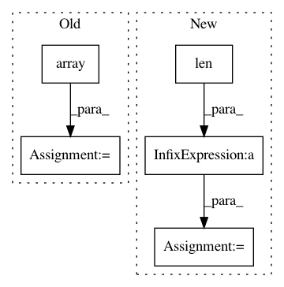

9bdbb11cf27060e7847a87dcdf691dd6b96ce6df,rlkit/data_management/obs_dict_replay_buffer.py,ObsDictRelabelingBuffer,random_batch,#ObsDictRelabelingBuffer#,171
Before Change
num_options = len(possible_future_obs_idxs)
next_obs_i = int(np.random.randint(0, num_options))
future_obs_idxs.append(possible_future_obs_idxs[next_obs_i])
future_obs_idxs = np.array(future_obs_idxs)
resampled_goals[-num_future_goals:] = self._next_obs[
self.achieved_goal_key
][future_obs_idxs]
for goal_key in self.goal_keys:
After Change
if num_future_goals > 0:
//// better future obs sample algorithm
future_indices = indices[-num_future_goals:]
possible_future_obs_lens = np.array([len(self._idx_to_future_obs_idx[i]) for i in future_indices])
next_obs_idxs = (np.random.random(num_future_goals) * possible_future_obs_lens).astype(np.int)
future_obs_idxs = np.array([self._idx_to_future_obs_idx[ids][next_obs_idxs[i]] for i, ids in enumerate(future_indices)])
resampled_goals[-num_future_goals:] = self._next_obs[
self.achieved_goal_key
][future_obs_idxs]
In pattern: SUPERPATTERN
Frequency: 3
Non-data size: 5
Instances
Project Name: vitchyr/rlkit
Commit Name: 9bdbb11cf27060e7847a87dcdf691dd6b96ce6df
Time: 2020-08-09
Author: 38036768+YangRui2015@users.noreply.github.com
File Name: rlkit/data_management/obs_dict_replay_buffer.py
Class Name: ObsDictRelabelingBuffer
Method Name: random_batch
Project Name: astroML/astroML
Commit Name: 4e70cb5fc9a9494e866ccd7d2e1a9046091b6337
Time: 2018-11-16
Author: bsipocz@gmail.com
File Name: astroML/density_estimation/gauss_mixture.py
Class Name: GaussianMixture1D
Method Name: __init__
Project Name: cesium-ml/cesium
Commit Name: 313b23e39765031385ca8940f02ff60fb6bbe43b
Time: 2016-08-25
Author: brettnaul@gmail.com
File Name: cesium/featurize.py
Class Name:
Method Name: featurize_time_series